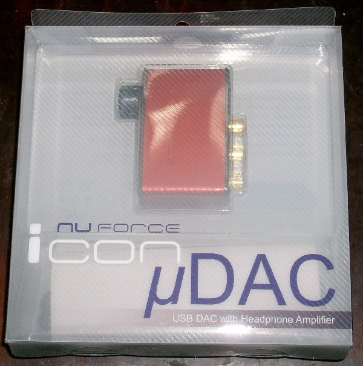
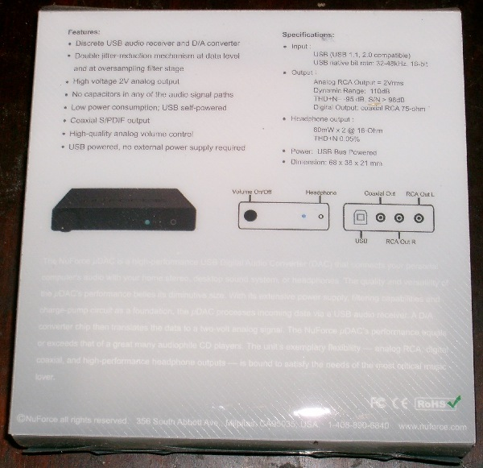
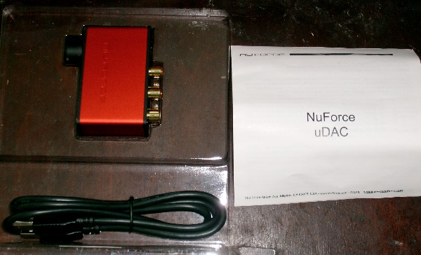
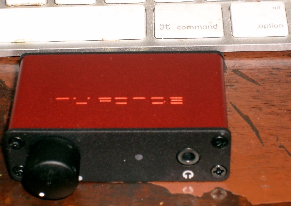
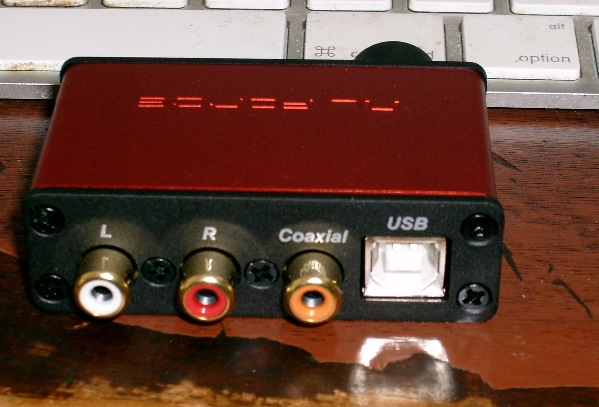
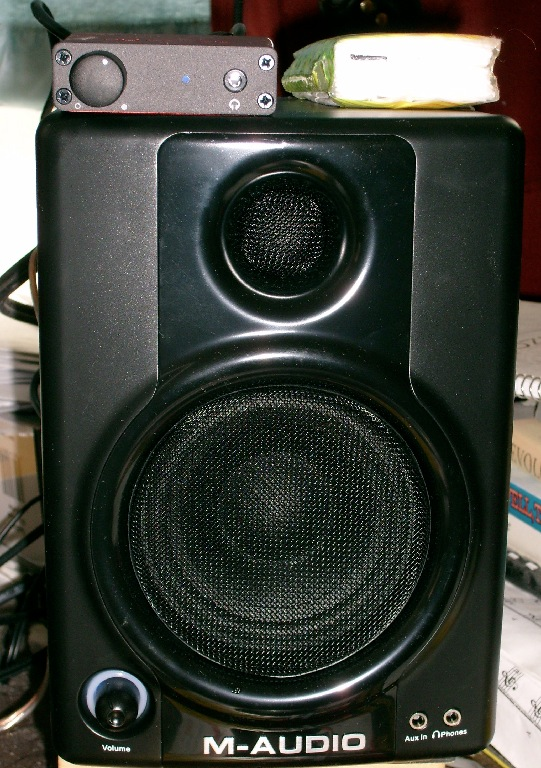
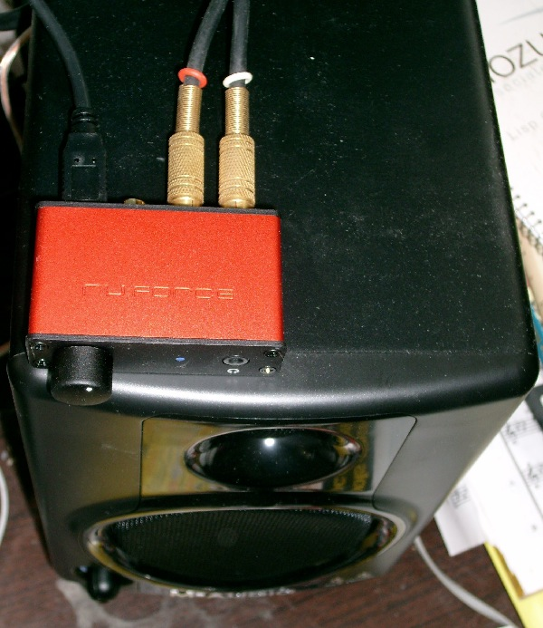
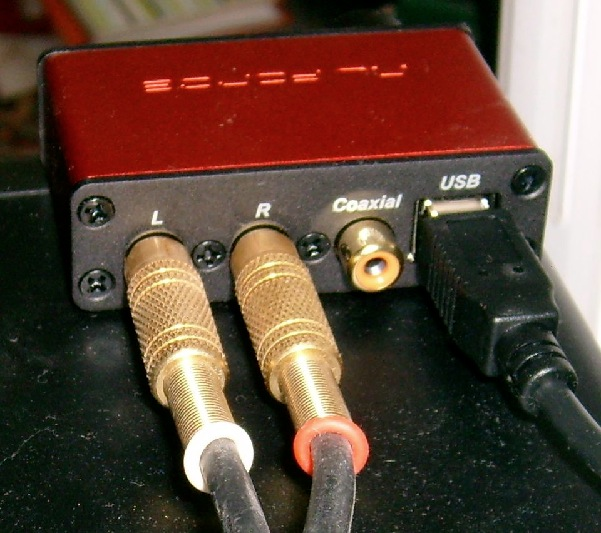

After buying some nice speakers, and re-importing my CD collection in Apple Lossless format, the next step in upgrading my computer audio was a DAC. Computer music is stored as a sequence of numbers, representing signal voltage samples. In order to listen to the music, you need to convert the digital samples to analog. Your computer contains a digital-to-analog converter (DAC), and a pre-amp, but they usually aren't very high quality, and the inside of a computer is a very electrically noise environment. Enter the USB DAC, a digital-to-analog converter that gets digital music from the USB port on your computer, converts it to analog, and connects to your powered speakers or amplifier through standard RCA jacks.
There are lots of USB DACs out there, ranging widely in price. I looked at a lot of them before encountering this Head-Fi review of the NuForce Icon uDAC. $99 buys a DAC purported to be as good as many DACs costing three or four times as much. And it's tiny. And USB powered. I bought mine from Amazon.
Below are unboxing and initial setup photos of my new uDAC. You can click some of the photos for larger versions. Remove "-600x604" and similar from the file names to get the full-size version, cropped from the direct camera image.
How does it sound? In a word, amazing! I've never tried another USB DAC, so I can't compare, but I like the uDAC. It will be a while, though, before I've sampled enough of my music to fully appreciate it.
    
Display Box
Display Box Rear
Display Box Open
Close Up
Close Up Rear


